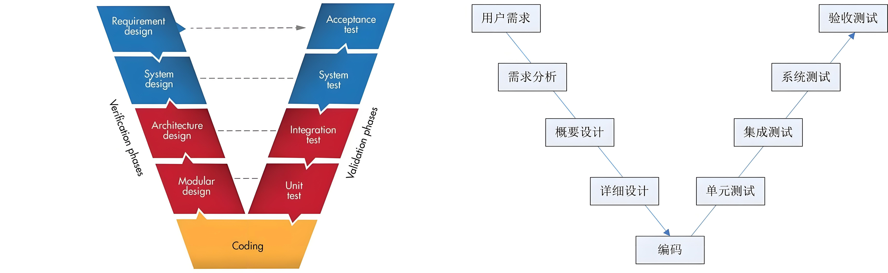
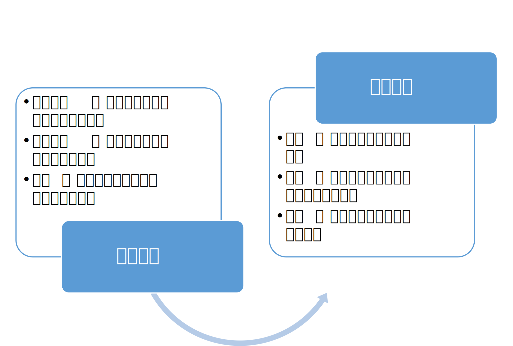

软件模块化数字化开发
简要介绍软件模块化、数字化开发要点，概括一下就是模块化开发、数字化验证。采用了V开发模型，汽车行业运用最广的软件开发模型。其实很多公司的软件开发流程都是类似的形式。

1. 需求分析
这部分内容，来自企划、市场等，形成需求文档，本文不做详细介绍。
2. 概要设计
- 主要设计软件架构，定义软件模块及接口等
- 最核心内容，设计硬件抽象层，实现软件/硬件分离，方便后续更换芯片平台，同时易于进行数字化验证（在PC上）
- AtuoSAR是一个好的参考
- 有一些工具支持架构设计，并生成代码，比如Enterprise Architect、DaVinci等，但价格昂贵，matlab/simulink中也有类似工具，一般用于AutoSAR开发。驱动器软件相对简单，可以不使用这些工具，使用Visio、draw.io等绘图工具即可
3. 详细设计
软件模块功能详细设计，包括外部设计（相当于头文件）和内部设计（相当于c文件）两部分。

4. 编码
一个模块对应一个c文件和头文件。一个模块相当于一个结构体类型，或者高级语言中的类。使用时，需要将结构体实例化，比如PI模块，可以实例化为速度环PI、电流环PI等。
4.1 手动编码
推荐使用VScode，配合文心快码插件使用。github copilot也可以，但网络原因可能无法连接服务器或者速度缓慢。使用git进行版本管控（推荐配合SourceTree图形界面使用），便于多人协作，同时整个软件开发过程可追溯，出现异常，代码回退也容易。可以自己搭建git服务器（自己安装Gitlab,安全可控），或者使用第三方服务，如github、gitee等。
4.2 自动编码
使用Matlab/Simulink建模，然后生成C代码，就是基于模型的开发（MBD）。
4.3 代码评审
使用gitlab的merge request功能，进行代码评审，评审通过后就可以自动将新增代码合并到主工程。
5. 测试
5.1 静态测试
静态测试为白盒测试，主要检查代码是否符合规范。编码规范可以采用MISRA。很多工具可以实现静态测试，比如SonarQube、C++ test等收费软件，或者Cppcheck等开源软件。
5.2 动态测试
动态测试为黑盒测试、功能测试，主要检查软件功能是否符合要求。主要有以下几种方式：
- Model in the Loop (MIL)，模型在环测试。需要在软件工程中加入电源、逆变器和电机模型，使用虚拟硬件抽象层。两种方式，一种是搭建模型进行仿真，缺点是没有直接测试代码；另一种是将软件代码使用mingw(gcc)编译成mex、dll动态链接库或者fmu，在Matlab中进行仿真，这种方式相当于直接对代码进行测试，缺点是没使用最终生成hex的编译器，同时无法验证芯片外设。
- Software-in-the-Loop (SIL)，软件在环测试。需要在软件工程中加入电源、逆变器和电机模型，使用虚拟硬件抽象层。两种方式，一种是在Codeblocks（一种c开发环境，也可以使用Visual Studio或者VScode）建立c工程，然后就可以直接进行编译测试；另一种是编译成dll动态链接库或者fmu，使用python进行测试。这两种方案免费，缺点是没使用最终生成hex的编译器，同时无法验证芯片外设。
- Processor in the Loop (PIL)，处理器在环测试。需要在软件工程中加入电源、逆变器和电机模型，只需要虚拟PWM和电压电流ADC采样。直接在控制板中运行代码即可，无需驱动板和电机，代码运行在MCU中，可以保证实时性，除PWM输出和电压电流采样，其它功能均可测试，与实物测试结果基本一致。
- Hardware in the Loop (HIL)，硬件在环测试。对于控制板来说，与实物测试并无差异。缺点在于设备成本较高。
- 实物测试
SIL测试中，使用mingw(gcc)编译器，可以生成代码测试覆盖率报告。
5.3 自动化测试
SIL、HIL、实物测试都可以实现自动化。其过程简单来说，就是按照要求给被控对象发送指令，然后根据反馈判断是否满足要求。测例包括测试条件（驱动器参数、电机参数等）、测试步骤（什么时间发什么指令）和断言（根据反馈判断是否满足要求）。好的测例，可以同时支持SIL、HIL和实物测试，无需重复编写。
自动化测试可以通过python实现，配合pytest测试框架，pytest生成的测试数据，可以使用Allure汇总成网页版测试报告。